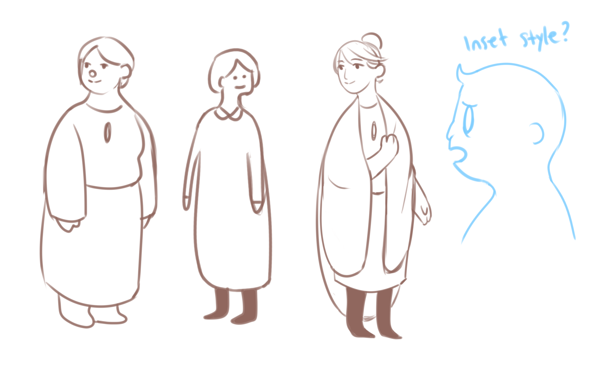
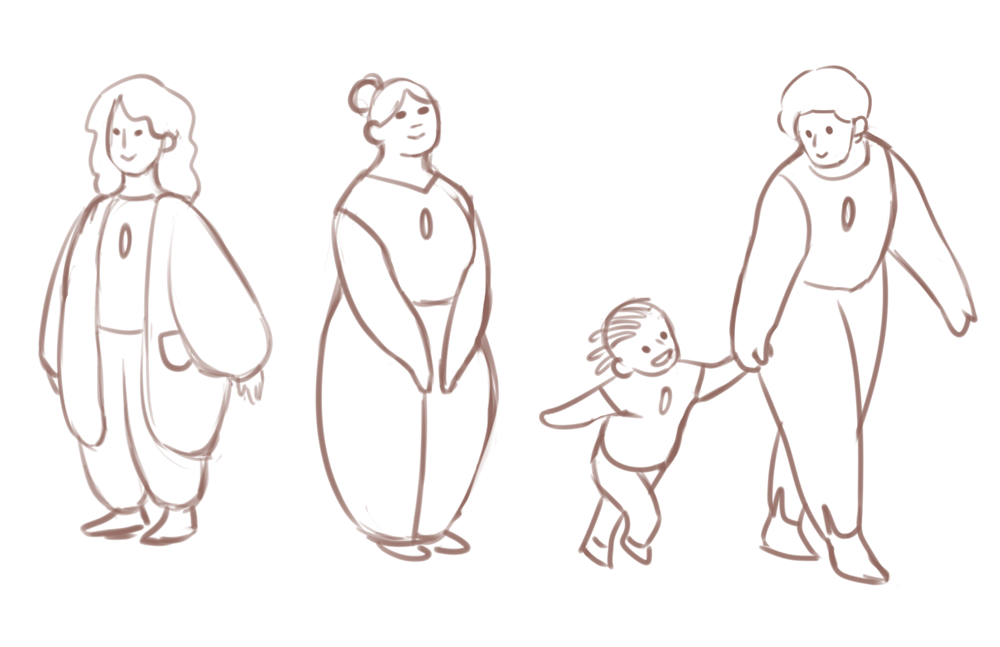
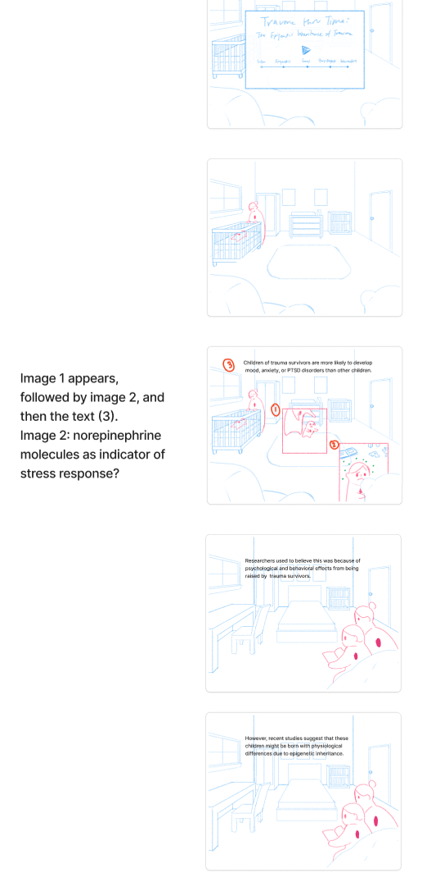
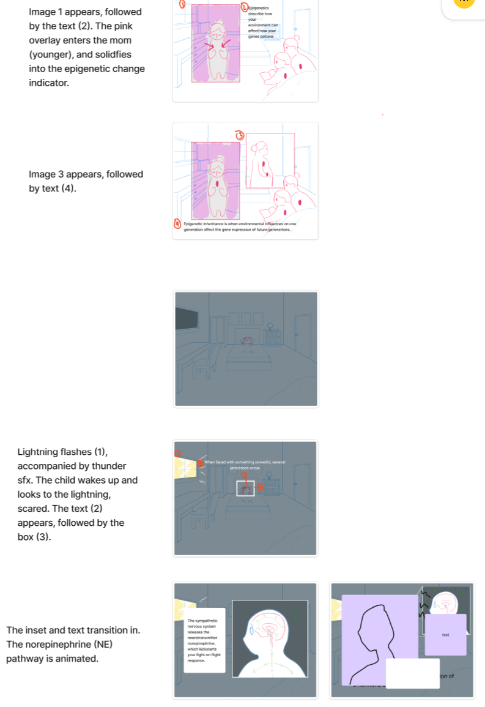
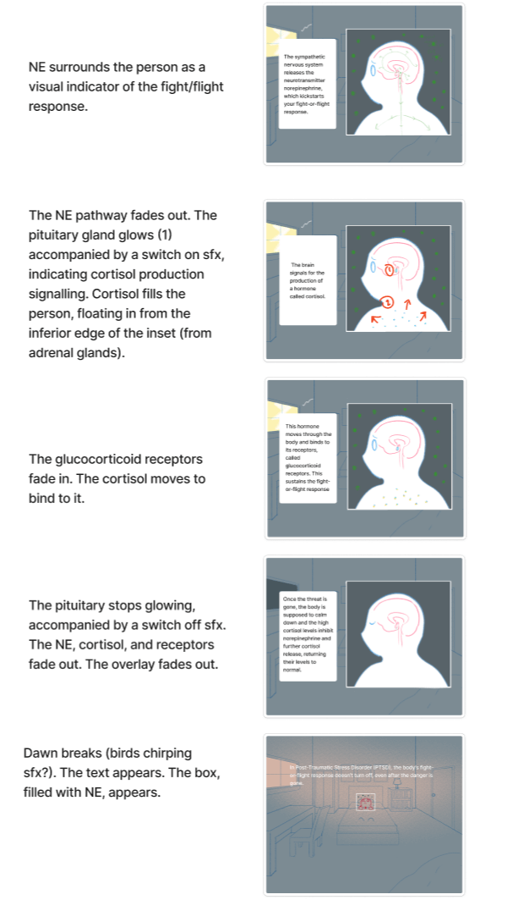
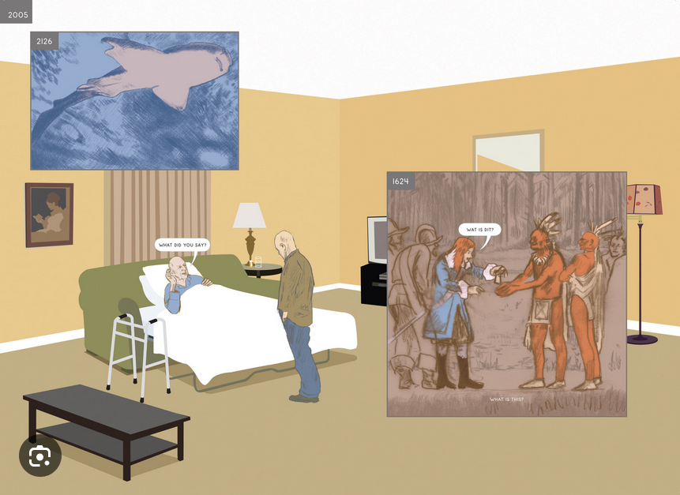
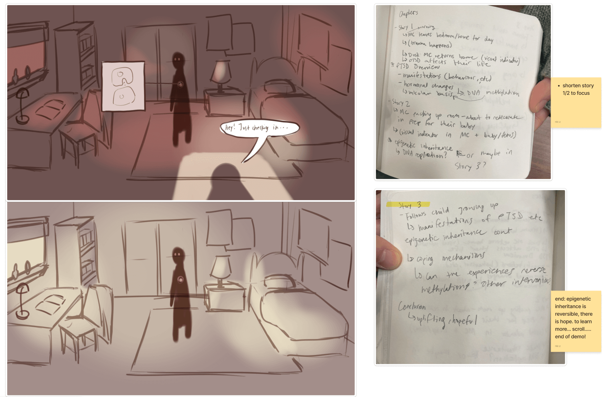
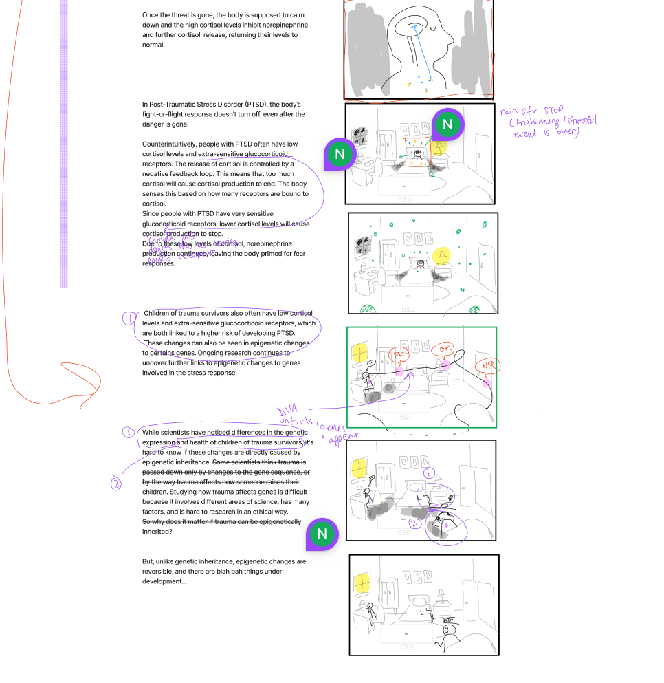
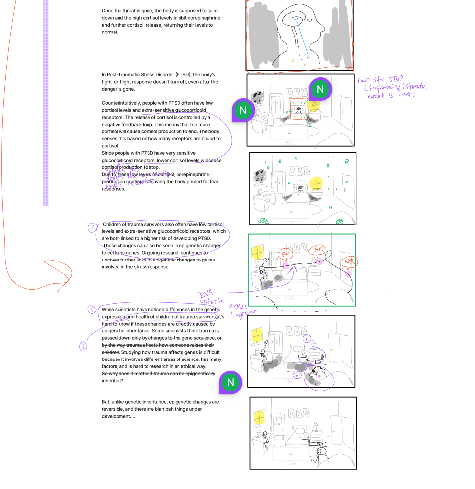

Mar 11th-Mar 17th, 2025
Time spent: 24 hrs...........
I am now rendering the 2D elements. Molly created the 3D renders of the room which I based the renders on. Here are the steps I took:
1. Trace 3D render and clean as needed.
2. Do flat colours. Choosing the colour palette for the rooms, and especially the nursery, which I did first (not pictured), took quite long.
3. Add the shading for the room, based on the the 3D render.
4. Apply a gradient map.
5. Put the flat colours layer on top of the gradient map shading layer, and turn it into a Multiply layer.
6. Draw in the characters.
Please see below for one of the (mostly) completed renders and visualization of the steps I took.
Environment Rendering


Mar 4th-Mar 10th, 2025
Time spent: 4 hrs
We made final changes to our script to make sure that our story was completely cohesive. To do this, we incorporated norepinephrine's role
in memory consolidation and how that ties into PTSD development. This
was important to show the differences in hormonal levels in people with PTSD and their children, who do not have PTSD, but can be more prone to it
due to epigenetic inheritance. Essentially, like their parents, children can have low cortisol and extra-sensitive glucocorticoid receptors,
which predisposes them to PTSD. However, they have normal norepinephrine levels, unlike their parents, who have elevated levels. I also finalized the character designs for the mom and child characters.
For the mom, I wanted to go with a round, comforting shape, almost egg or chicken-like. The child character just had to be cute and look like their
mother. Please see below for the character designs.
Character Design: Initial Child Designs

Character Design: Final Designs

Feb 25th-Mar 3rd, 2025
Time spent: 6 hrs
We've (hopefully) finally completed our research! We've spent a lot of time on our script to ensure that the scientific is accurate,
even in the more simplified form it takes in our product. While reviewing our re-re-re-re-re-revised script (we're on V6 now), I noticed
an inaccuracy and then realized that we actually hadn't looked into how norepinephrine downregulation happens after your fight/flight response,
or about how the negative inhibition works in detail. I looked into it, and discovered a beautiful receptor with many letters in its name (mineralocorticoid receptor).
I revised the script around it, even though it overcomplicated our script.
For each storyboard, I also wrote out what actions would be paired with what user input, and in what order.
The next morning, the group met to discuss how we could revise the the script
without having to introduce a new receptor. The new research was critical, in that it helped us resolve a major error in our science in script V5, but it's
unfortunate that a lot of the new research won't make it into our end product.
The last bit of this week was spent starting on our character designs. We're going for a cute and simple style, to make the module more inviting for
our user base. For this week, I have created some potential moms.
Character Design: MOM
 Feb 18th-24th, 2025
Time spent: 9.5 hrs
This week was spent creating storyboards for our pre-production document (and personal reference, of course...). Looking at the total time spent....wow this took a while!!
How did that happen?? A lot of time was spent researching the binding mechanism and pathway of cortisol to the glucocorticoid receptors, and thinking abouut how high
fidelity and accurate our representation would be... The time investment on this was because we wanted to have a 50/50 split of 3D and 2D elements, but by this stage
our project had become very heavily 2D.
But in the end, I just went with the very simple representation we came up with in our thumbnails.
Essentially, what I learned was that if we wanted to have a more complicated model, it would take a ton more research that we did not have time for. Alas!
I also added text descriptions of what was happening in each storyboard, and did a first pass at laying out where the text should go.
Storyboards
  Feb 11th-17th, 2025
Time spent: 8.5 hrs
In the first half of the week, I created some initial concept art of what the scrollytelly could look like. As a group, we met and planned out content for our project.
We decided early on in the
project that we wanted to incorporate the style of the graphic novel "Here", which explores snapshots throughout time in a single location.
It jumps between several eras, including pre-colonial times, the 1980s, and some pre-historic ones that I cannot possibly spell in VS Code (no spellcheck 😞), so we'll see how that develops throughout our project!
In the latter half of the week, Molly did our initial research, script, and thumbnails. I revised the script and thumbnails and created some intial concept art. Time spent was pretty evenly split between both tasks. Scipt changes were primarily made to add context to jargon and fix some inaccuracies in the science. Our target audience has Grade 8 reading comprehension and knowledge, so that meant defining terms like "epigenetics" or "epigenetic inheritance". Most of the time spent editing the script was used to do research on the hormonal stress response. One bit of interresting knowledge that didn't fully make it into the script is that people with this condition can often be triggered by seemingly innocuous events, or when "nothing" has happened, is because they have upregulated norepinephrine. In its capacity as a neurotransmitter, it helps with consolidation of strong memories and plays a part in fear conditioning. If a survivor is suddenly startled while doing something mundane, ex. hearing a loud noise while grocery shopping, they can become triggered, and as a result, the experience of shopping can get tagged as a traumatic event too. Over time, this can lead to survivors becoming more avoidant and reclusive. For the thumbnails, I redrew the panels and made suggestions for sfx, transitions, and other visual features.
Here
Concept Art & Content Planning
Thumbnails
 

Jan 28th- Feb 3rd, 2025
Time spent: 1 hr
We formed our groups! I'm working with Molly and Nic on a scrollytelly. We are choosing between two ideas:
1. A scrollytelly about epigenetic inheritance of trauma, or
2. A scrollytelly about the nutritional value, cultural importance, and signficance of traditional, non-Western diets
Which one are we going to do?? Well, we've decided to pursue the former, but I actually only made a mock-up of what
the second one could've looked like.